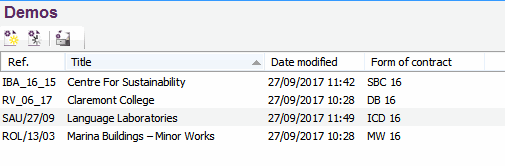

Sorting the Jobs List |
There are various ways to organise the job list. The default option is Date Modified, but it can also be organised by Job Reference, Title and Form of Contract.
Clicking on the column titles in the job list will sort the column in an ascending order. Clicking it again will sort the column in a descending order. The user can then retain the choice by selecting View > Sort Job Explorer.

See Also:
Viewing Jobs
Frequently Asked Questions